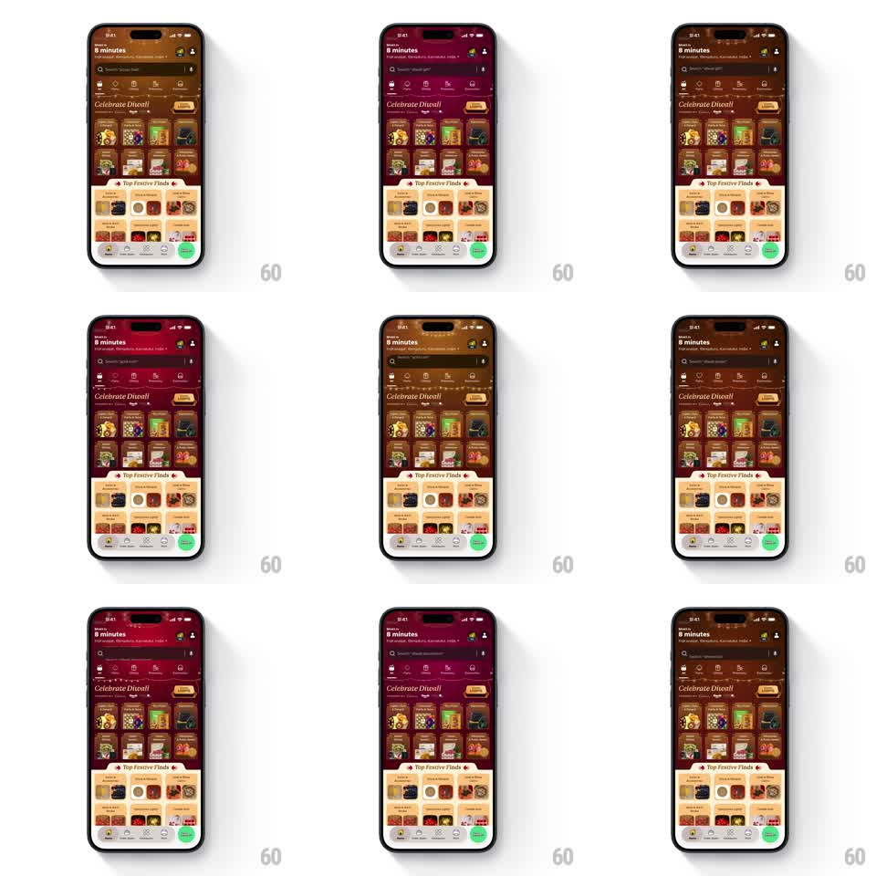

Media
Frame-by-frame

Rebuild this interaction 1:1: Blinkit's Diwali theme - the dark maroon storefront is strung with twinkling fairy lights along the header while the search placeholder auto-cycles through festive queries and the Celebrate Diwali product grid glows warm.

Rebuild this interaction 1:1: Blinkit's Diwali theme - the dark maroon storefront is strung with twinkling fairy lights along the header while the search placeholder auto-cycles through festive queries and the Celebrate Diwali product grid glows warm.
## Integration
Integration: stack-agnostic spec - springs given as stiffness/damping, timed motions as duration + curve; map every value to your framework and animation library of choice.
## Scene
Dark maroon-brown grocery home: delivery promise header ("Delivery in 8 minutes" with location), search bar with cycling placeholder, category icon row, "Celebrate Diwali" banner strip, a dense 2-column product grid (festive packs, dry fruits), "Top Festive Finds" section header with diya accents, and the bottom tab bar with a green cart pill.
## Motion spec
Pattern: ambient festive lighting + placeholder ticker, indefinite.
- Fairy lights: a string of small bulbs arcs along the header edge; each bulb twinkles on an independent cycle (opacity 0.4 -> 1 with a soft glow halo, 600-1200ms, random phase) in warm yellow, pink, and green.
- Placeholder: the search hint cross-fades every ~3s ("Search 'dhaani'...", "Search 'soan papdi'...", "Search 'dry fruits'..." - slide-up 8px + fade, 250ms).
- Theme: the header's gradient hue slowly shifts between maroon and deep purple (8s alternate).
- Grid: product cards are static; the lighting does all the work.
## Calibration
- Twinkles are staggered and random-feeling - never a uniform chase.
- The glow stays subtle; the lights decorate the header, not illuminate the page.
## Reduced motion
Static lights at 80% opacity; placeholder fixed on the first query.
## Don't miss
- The light string follows a slight sag curve like a real strand.
- The green cart pill and tab bar keep standard Blinkit styling amid the theme.